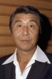

Also known as:子連れ狼 親の心子の心 (original title)
Country:Japan, 81 minutes
Spoken languages:Japanese
Genres:Action
Director(s):Buichi Saito
Writer(s):Kazuo Koike
Video Codec:Unknown
Number: 149


Certification:
Storyline:
In the fourth film of the Lone Wolf and Cub series, Ogami Itto is hired to kill a tattooed female assassin and battles Retsudo, head of the Yagyu clan, and his son Gunbei.
Cast: 


Medium: Bluray,
Comments: Part of: Lone Wolf & Cub - The Criteron Collection
Loaned: No
Aspect ratio: Unknown